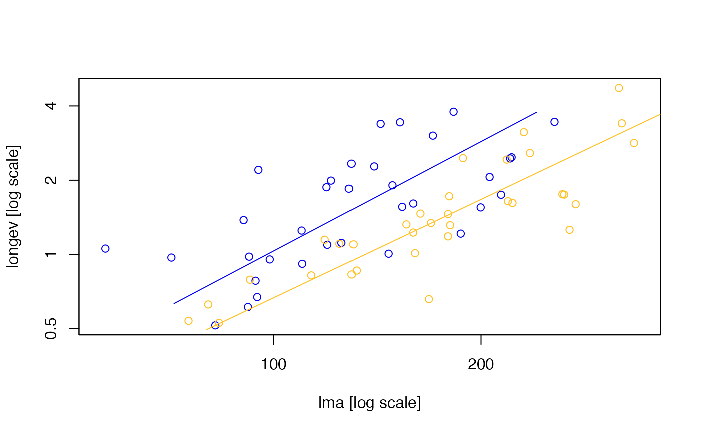
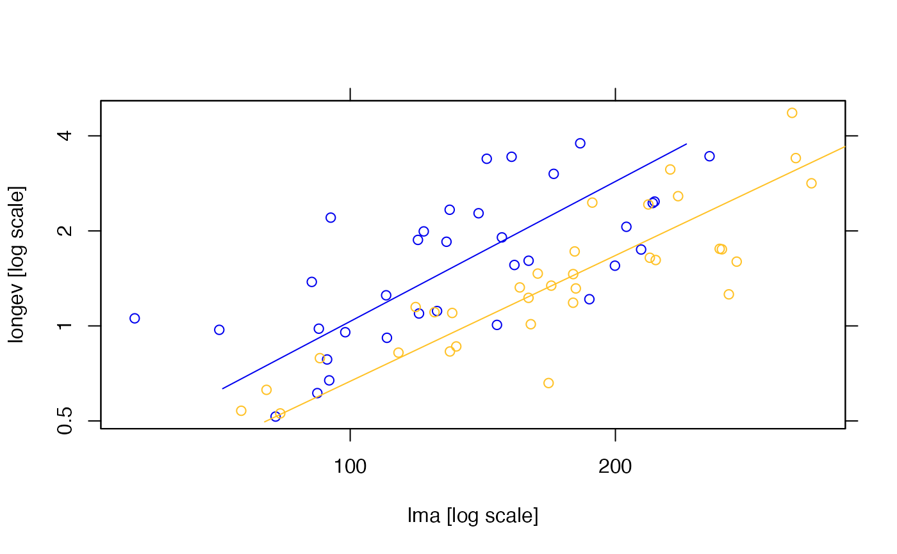
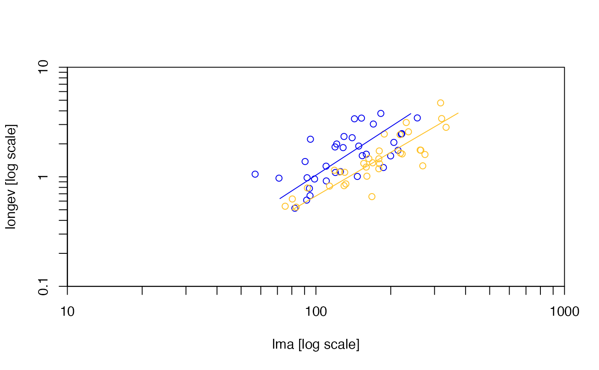
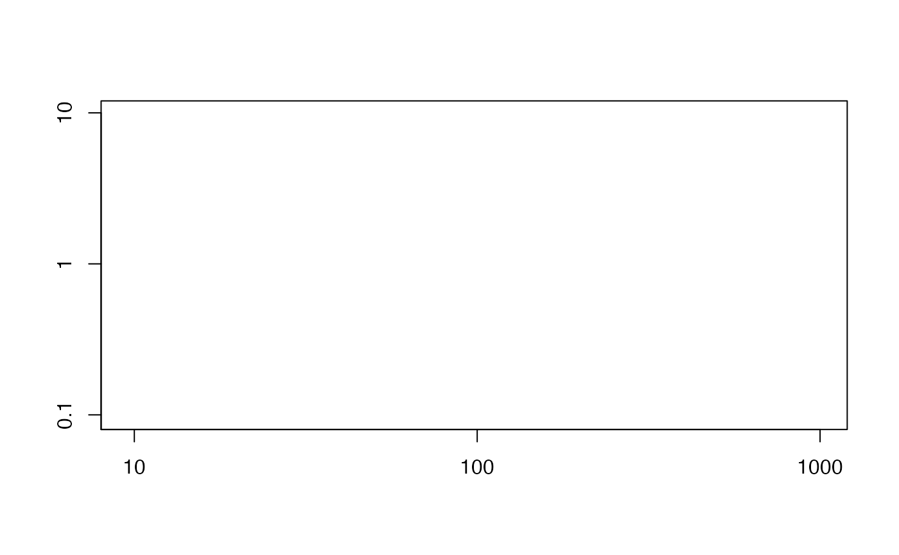

Functions used in conjunction with plot.sma to customize
spacing of ticks on plot axes. defineAxis creates an 'axis' object,
including tick spacing, limits, and labels, that can be passed into
plot.sma or nicePlot. nicePlot creates an empty
plot using x and y axis objects.
Where to draw major and minor ticks (vectors).
the x or y limits of the plot, (x1, x2) or (y1,y2).
Labels to draw at the ticks (optional).
a logical value indicating whether tickmarks should also be drawn on opposite sides of the plot, i.e. right or top
'axis' objects, the result of calling 'defineAxis'.
One of 'x', 'y' or 'xy', specifying which axes draw in log10 scale.
a logical value indicating whether the default annotation (x and y axis labels) should appear on the plot.
a label for the x axis, defaults to a description of x.
a label for the y axis, defaults to a description of y.
The length of tick marks as a fraction of the smaller of the width or height of the plotting region. If tck >= 0.5 it is interpreted as a fraction of the relevant side, so if tck = 1 grid lines are drawn. By default set to current system defaults (tck = par("tck")).
a logical indicating whether a box should be drawn around the plot, by default = TRUE.
Arguments to be passed to nicePlot, and therein to 'axis'.
By default, calls to plot.sma use the values given by
plot.default to determine axis limits and spacing of major and
minor ticks. Users can override these values by passing two 'axis' objects
created by defineAxis to plot.sma. When both x and y
axis objects are passed to plot.sma, the function uses
nicePlot to construct the axes according to the specified values,
instead of plot.default. As a minimum, users must at least one
argument (major.ticks) to defineAxis when passing these to
plot.sma.
The function nicePlot can also be called to construct a new set of
axes according to the specified values. For this to work, axis objects must
contain both major.ticks and limits.
# Load leaf lifetime dataset:
data(leaflife)
#First example of axis spacing
ft <- sma(longev~lma*rain,log="xy",data=leaflife)
xax <- defineAxis(major.ticks=c(50, 100, 200, 400))
yax <- defineAxis(major.ticks=c(0.25, 0.5, 1,2,4,8))
plot(ft, xaxis=xax, yaxis=yax)

#As above, marking axes on both sides
xax <- defineAxis(major.ticks=c(50, 100, 200, 400), both.sides=TRUE)
yax <- defineAxis(major.ticks=c(0.25, 0.5, 1,2,4,8), both.sides=TRUE)
plot(ft, xaxis=xax, yaxis=yax)

#Using labels with log10 spacing and minor tick marks
xax <- defineAxis(limits=c(10, 1E3), major.ticks=seqLog(1, 1000),
minor.ticks=makeLogMinor(seqLog(1, 1000)))
yax <- defineAxis(limits=c(1E-1, 1E1), major.ticks=seqLog(1E-2, 10),
minor.ticks=makeLogMinor(seqLog(1E-2, 10)))
plot(ft, xaxis=xax, yaxis=yax)

#As above, but using expressions as labels
xax <- defineAxis(limits=c(10, 1E3), major.ticks=seqLog(10, 1000),
minor.ticks=makeLogMinor(seqLog(10, 1000)),
major.tick.labels = parse(text=paste("10^", c( 1,2,3), sep="")),
both.sides=FALSE)
yax <- defineAxis(limits=c(1E-1, 1E1), major.ticks=seqLog(1E-1, 10),
minor.ticks=makeLogMinor(seqLog(1E-1, 10)),
major.tick.labels = parse(text=paste("10^", c( -1,0,1), sep="")),
both.sides=FALSE)
plot(ft, xaxis=xax, yaxis=yax)
#start an empty plot using nicePlot
xax <- defineAxis(limits=c(8, 1.2E3), major.ticks=seqLog(1, 1000))
yax <- defineAxis(limits=c(0.8E-1, 1.2E1), major.ticks=seqLog(1E-2, 10))
nicePlot(xax,yax,log='xy')
